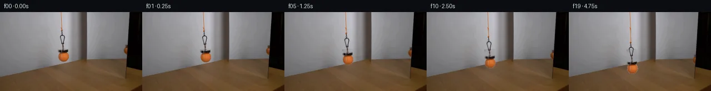

![首帧]()

Round 00
2026-11-05T12:29:05.372297+00:00像素候选变化代码 +207/−0inspection 更新
pixels 98b1eadd74ddb2a0 · code ca1e88abeaf2e413
查看本轮 generate.py 真实 diff
--- previous/generate.py
+++ current/generate.py
@@ -0,0 +1,207 @@
+"""Deterministic source-pixel continuation; no models, engines, or image viewing."""
+from pathlib import Path
+import json
+import numpy as np
+from PIL import Image, ImageDraw
+from scipy.ndimage import map_coordinates, binary_dilation
+from scipy.sparse import lil_matrix
+from scipy.sparse.linalg import spsolve
+from artifact_io import save
+
+ROOT = Path(__file__).resolve().parent
+SOURCE = np.asarray(Image.open(ROOT / 'first_frame.png').convert('RGB'), dtype=np.uint8)
+A = SOURCE.astype(np.float64)
+H, W = A.shape[:2]
+Y, X = np.mgrid[:H, :W]
+
+
+def harmonic_fill(rgb, mask):
+ """Solve the discrete Laplace equation only inside the local removal mask."""
+ coords = np.argwhere(mask)
+ ids = np.full(mask.shape, -1, dtype=int)
+ ids[mask] = np.arange(len(coords))
+ matrix = lil_matrix((len(coords), len(coords)), dtype=np.float64)
+ rhs = np.zeros((len(coords), 3))
+ for k, (y, x) in enumerate(coords):
+ neighbors = [(yy, xx) for yy, xx in ((y-1,x),(y+1,x),(y,x-1),(y,x+1))
+ if 0 <= yy < H and 0 <= xx < W]
+ matrix[k,k] = len(neighbors)
+ for yy,xx in neighbors:
+ if mask[yy,xx]:
+ matrix[k,ids[yy,xx]] = -1
+ else:
+ rhs[k] += rgb[yy,xx]
+ result = rgb.copy()
+ result[mask] = spsolve(matrix.tocsr(), rhs)
+ return result
+
+
+# A per-row local backdrop estimate isolates the rope, dark hardware, and ball.
+# The broad measured bright wall gradient is left in place.
+expected = np.zeros_like(A)
+for y in range(H):
+ left, right = A[y,105], A[y,118]
+ s = np.clip((np.arange(W)-105)/13.0, 0, 1)
+ expected[y] = left[None,:]*(1-s[:,None]) + right[None,:]*s[:,None]
+deficit = (expected-A).mean(axis=2)
+chroma = A[:,:,0] - A[:,:,2]
+main_seed = np.zeros((H,W), dtype=bool)
+main_seed |= (Y>=32)&(Y<=34)&(X>=108)&(X<=114)&((chroma>9)|(deficit>9))
+main_seed |= (Y>=35)&(Y<=67)&(X>=106)&(X<=118)&(deficit>7)
+main_seed |= (Y>=68)&(Y<=73)&(X>=102)&(X<=124)&((deficit>9)|(chroma>10))
+main_seed |= (Y>=74)&(Y<=90)&(X>=103)&(X<=125)&(chroma>8)
+# A one-pixel guard clears the antialiasing around the measured silhouette.
+main_remove = binary_dilation(main_seed, iterations=1)&(Y>=32)&(Y<=91)
+main_clean = harmonic_fill(A, main_remove)
+
+# Use the actual antialiased RGB contrast to estimate the sprite matte.
+# Faint boundaries are decontaminated from the original gray backdrop.
+delta = A-main_clean
+strength = np.maximum(np.max(np.abs(delta),axis=2), np.maximum(chroma,0))
+main_alpha = np.clip((strength-2.0)/36.0,0,1)*main_remove
+main_fg = np.zeros_like(A)
+np.divide(delta, main_alpha[:,:,None], out=main_fg,
+ where=main_alpha[:,:,None]>1e-6)
+main_fg += main_clean
+main_fg = np.clip(main_fg,0,255)
+main_premul = main_fg*main_alpha[:,:,None]
+
+# The second image lies behind a stationary, sloping black boundary. Measure
+# the boundary's subpixel position from clear rows outside the ball region.
+lum = A.mean(axis=2)
+edge_samples = []
+for y in list(range(0,56))+list(range(79,98)):
+ bg = np.mean(lum[y,219:224])
+ black = np.mean(lum[y,235:240])
+ visibility = np.clip((lum[y]-black)/(bg-black),0,1)
+ for x in range(226,234):
+ if visibility[x]>=0.5 and visibility[x+1]<0.5:
+ edge_samples.append((y,x+(visibility[x]-.5)/(visibility[x]-visibility[x+1])))
+ break
+edge_fit = np.polyfit(np.array(edge_samples)[:,0], np.array(edge_samples)[:,1],1)
+edge_x = np.polyval(edge_fit,np.arange(H))
+# Cubic aperture approximates the source's approximately 1.5-pixel soft edge.
+v = np.clip((edge_x[:,None]-X+0.78)/1.56,0,1)
+aperture = v*v*(3-2*v)
+right_under = A.copy()
+for y in range(57,80):
… diff truncated; 120 more lines …